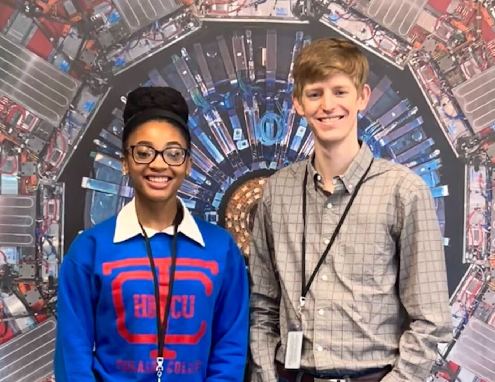

CMS PURSUE/SPRINT Outreach Program
August 10, 2024
The CMS PURSUE/SPRINT outreach and internship program just ended for this year with a series of presentations by the interns at Fermi National Lab. This innovative program brings students from all across the nation, particularly those from institutions that do not have historical involvement in particle and nuclear physics, together to learn about what it's like to be a particle physicist. In the intense ten week program, students go through a 2-week coding 'bootcamp' before being paired with a mentor inside the CMS Collaboration to work on a project for the remaining 8 weeks. This year I volunteered as a mentor and had the pleasure of working with Raven Lee from Tougaloo College (see the image below) on a project looking at the performance of CMS for finding a special kind of particle called the W boson. Raven did an incredible job presenting her hard work this summer and I am excited to see where her future takes her!
More information on the CMS PURSUE/SPRING program can be found in this great writeup by the CERN Courier about the program.
